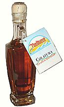
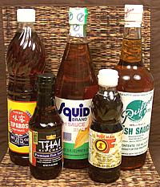
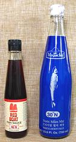
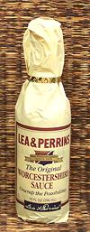
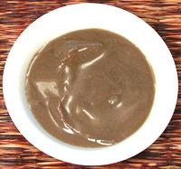
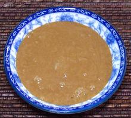
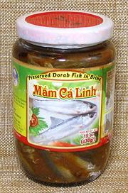

SAFARI
Users
Roman Fish Sauces
Fish sauce was so important to the cuisine of the Roman Empire that almost all known Roman recipes call for it. People attempting to recreate dishes from those times often suggest substituting anchovy paste, an ingredient certain to ruin the dish entirely - then tell you it must be "an acquired taste".
Actually, quite suitable fish sauces made by methods very similar to those of ancient Rome are easily available in any market catering to a Southeast Asian community. Also, a fish sauce called Colatura di Alici is produced in Italy today, though it's more concentrated than the original Roman or Southeast Asian products.
Originally, a fish sauce called "garos" was brought from Greece to Rome. The Romans took to it and established factories to produce it in quantity. This became a major industry, particularly in Spain, just as it is in Thailand and Vietnam today. Some fish sauce was still being made in Spain during Moorish times. Whether there is any connection between the Greek fish sauce and Southeast Asian products can not be known, but the naturalness of its development from salt preserving fish requires no such technology transfer.
The basic difference between the Roman fish sauce and the current Thai product is the Thai practice of using only fresh whole anchovies. The Romans sometimes used other fish and enhanced the mix with extra fish blood and guts, or for higher grades may have used mostly the blood and guts. This would produce a faster fermenting product of higher concentration. Note that in southern Thailand a fish sauce called Tai pla is made entirely from mackerel entrails - and it is definitely stronger than regular Thai fish sauce.
The Romans had different grades of fish sauces and used several names for them. To the best of current knowledge this is how it shakes out:
- Garum: A high grade fish sauce made from the guts and blood of a single kind of fish, generally anchovies, mullet or mackerel. Subst: use a premium brand Thai fish sauce like Squid or Tra Chang.
- Liquamen: This name appears in the 4th century CE and detailed recipes have been found. Whole fish is used with added blood and guts. It is not definitively known if liquamen denotes a difference in formula or simply a change in name over time, but some think liquamen denotes the everyday sauce and Garum the costly extra-premium product. Subst: use an everyday Thai fish sauce like Tiparos.
- Muria: An ordinary quality sauce made from tuna guts, or a third quality sauce made from any fish or shellfish that had no other use at the time. In the Roman provence of Judaea certified kosher versions were made excluding all shellfish or fish without scales. Subst: Philippine Patis fish sauce.
- Allec: This was a paste formed in the bottom of the barrels, a byproduct of making fish sauce. Allec was not used for cooking but served as a condiment. Subst: try the Philippine sauces Bagoong Monamon or Bagoong Terong - if you dare - or Vietnamese Mam Nem for something a bit less pungent. We really don't know which is closer.
- Oxygarum: Garum mixed with vinegar, similar to Southeast Asian dipping sauces.
- Meligarum: Garum mixed with honey.
Colatura di Alici
 This fish sauce is made in Italy today, but it's not known if by an ancient process or one just a few hundred years old. It does differ substantially from the original Roman product where the end objective was fish sauce.
The name means "filtration of anchovies" and it's a byproduct of salting anchovies in barrels. Made this way the quantity is small and it is highly concentrated and quite expensive. A price of about $7.50 an ounce makes it quite attractive to chefs at fancy restaurants, but that isn't to say it isn't worth it. Just a couple of drops per serving will do in any case.
Thai fish sauce is of similar strength as drawn from the barrels, but
is diluted to about 20% when bottled. Photos
© source.
Southeast Asian Clear Fish Sauce
  These sauces are heavily used in Thailand and Vietnam taking the place soy sauce holds in China and Japan. It is both a flavoring element and provides the salt for the dish it is included in. The great majority of Thai and Vietnamese recipes include at least some fish sauce.
This type of fish sauce is also important in the Philippines, but is less used in other countries of Southeast Asia. Fermented shrimp paste, fish paste and other similar condiments are more prevalent in those countries.
Subst: There is no truly satisfactory substitute for fish sauce. A fermented yellow bean sauce is about as close as you can get, and that would be suitable for strict vegetarians, but it is not clear. Lacking that, you would have to use plain salt but an important flavor element will be missing.
Thai fish sauce is now common in Southern California because of the many Asian communities here, but it's also being adopted into the famous "California cuisine" - expect it to spread. Here are the national names for it, as best I could find them, anyway.
- California - nampla (easier to say than nuocmam)
- Thailand - nam pla
- Vietnam - nuoc mam
- Philippines - patis
- Cambodia - tuk prahoc
- Malaysia - budu
- Burma (Myanmar) - ngan byar yay
- Japan - shottsuru
- China - yu lu
Fish sauce is made by layering salt and freshly caught anchovies in large barrels or crocks and setting the barrels out in the hot sun for a year or up to two years. The fish are digested by their own digestive enzymes. The clear fish sauce is then drained through a tap at the bottom of the barrel, filtered and diluted with water to the desired strength, usually about 20%, and bottled. Some bottles carry designations like 30°N, 40°N, 50°N. This is a measure of the nitrogen content, which correlates with the amount of protein in the fish sauce. Lower numbers indicate a lighter sauce.
The "first extraction" provides the top grade sauce. The barrels may then be refilled with salt water for a second extraction but that "cooking grade" product isn't commonly exported to the US. The process of making fish sauce is time consuming and expensive, so some manufacturers add hydrolized wheat protein, acids, MSG and other additives to speed digestion and mask defects. Check the label.
Buying: Look for a perfectly clear light amber color and an ingredient list including only Anchovies, water, salt and sugar. Most shipped to North America has some sugar, which may not be included in the same brand as sold in its home market. Price as a guide is rather unreliable here in Southern California, so it's probably even less reliable elsewhere.
There are probably at least 30 brands sold in Los Angles. Most come from Thailand and the Philippines but Vietnamese is becoming more common. Some Thai sauces are "Vietnamese style" and have Vietnamese lettering along with Thai. This is said to indicate they are slightly lighter and less salty than normal Thai practice.
Philippine fish sauces are considered heavier and undesirable for Thai and Vietnamese cooking. They are generally made from a number of different fish rather than just anchovies, harking back to the Roman practice of using a single fish species for the top grades and just about any fish for the lower grades.
Here are a few notable brands.
Red Boat 40°N:
This is a newcomer (2015), heavily marketed as a super-premium Vietnamese fish sauce. It is sold by Trader Joe's and other high end markets at a super-premium price - 2016 US $4.49 for 8.45 ounces ($0.53 / ounce) at Trader Joe's, and the same price at the large Asian market where I buy most of my fish sauces, but higher at Sur le Table and Whole Foods. Vietnamese fish sauces are supposed to be lighter and less salty than Thai brands, but Red Boat is noticeably darker, stronger and saltier than any Thai fish sauce I have on hand, and tastes to me a little harsh. Comparing to Golden Shell and Newtown (see below), I seriously question if this sauce is actually suitable for Vietnamese cuisine. I also question how a tiny "family secret" can go into huge volume production almost overnight. Nonetheless, it is seriously challenging Three Crabs as darling of the foodie set.Megachef:
Another newcomer (2015), a super-premium 30°N Thai fish sauce developed by the people who make Squid brand. It sells in Los Angeles for a reasonable price, 2016 US $2.95 for 23.6 ounces ($0.13 / ounce). In my opinion it is smoother and less harsh than Red Boat, and light enough for Vietnamese cuisine as well as Thai. I have recently been using this sauce in dips and other places where the fish sauce itself is emphasized.Tra Chang:
(Scale) A top premium brand from Thailand, considered one of the very best by experienced Thai cooks. Not the easiest to find here in Los Angeles. I will comment more when I find some.Golden Boy:
Another Thai premium brand that's highly recommended by experienced cooks, but a little hard to find here in Los Angeles.Squid:
This is a well regarded premium brand from Thailand that is very available. I have used this product for years, as it's widely accepted by Thai cooks, available, and attractively priced: 2016 US $0.06 / ounce at the Asian markets (or an incredible $0.44 / ounce plus shipping from Amazon). The only real downside is that the thoroughly American label lacks exotic mystique. It's a shaker bottle, very inconvenient for me, so I run the point of a small knife around the plastic restriction to remove it.Tiparos:
A widely available fish sauce by one of Thailand's leading food companies. It's put up in cheap seeming plastic bottles, but is considered a very good fish sauce. It's a big seller in Thailand and its "trade dress" is widely imitated by knock-offs. Tiparos is very modestly priced at 2016 US $06 per ounce.Golden Shell:
This premium Vietnamese fish sauce is "100% pure first press extra virgin", made from Anchovies and Salt, no other ingredients. It is a lot lighter and less salty than Red Boat, but Vietnamese fish sauces are supposed to be lighter and less salty than Thai. It costs 2016 US $0.12 per ounce at an Asian market in Los Angeles (San Gabriel), vs $0.53 for Red Boat.Newtown:
This premium Vietnamese fish sauce is "100% fresh first native extraction", made from Anchovies and Salt, no other ingredients. It is a lot lighter and less salty than Red Boat, but Vietnamese fish sauces are supposed to be lighter and less salty than Thai. It costs 2016 US $0.09 per ounce at an Asian market in Los Angeles (San Gabriel), vs $0.53 for Red Boat.Thai Kitchen:
This fish sauce is put up in small bottles at a high price, and is not considered in the top ranks - but it may be the only fish sauce available in some regions. Thai Kitchen is an American brand that's been well marketed and is carried by many grocery chains. The 7 ounce bottle in the photo above cost more than the liter of Squid, a better fish sauce.Three Crabs
This one has had a cult following in North America for having been recommended by some TV chef or other. Part of its appeal is doubtless the exotic Asian label, but its flavor is quite decent. Among actual Asian cooks, it is more favored by Vietnamese than Thai, and it is recommended by Korean cooking maven Mangchi. On the other hand, it says "Product of Thailand" and "Processed in Hong Kong", and it contains fructose and "hydrolized wheat protein" (a "concealment name" for Monosodium Glutamate (MSG)). All this indicates the possibility it is manufactured by chemical hydrolysis rather than natural digestion. In any case, it's kind of hard to fully trust anything "processed" in the land of lead and melamine. The manufacturer has several other brands (Flying Fish, Flying Lion, etc.) with similar fine print on the label. The price is above average at 2016 US $0.14 per ounce in the Asian markets.Rufina Patis
A typical Philippine fish sauce made from various scads, herring, sardines, mackerels, water, salt and Sodium Benzoate added as a preservative.Vegetarian Fish Sauce:
These come from Vietnam, which has a stricter form of Buddhism than Thailand. They are not easy to find in Southern California, which is just as well, because the ones I've sampled were truly awful. If you don't need a clear sauce, use Yellow Bean Sauce (Healthy Boy is good), and if you need clear, just use salt, or perhaps soy sauce.
I would like to point to a comparison of 13 fish sauces on a Web site named "Our Daily Brine". There were only two tasters, neither with any Asian credentials, nearly all their comparisons were straight from the bottle, and their results are very much at odds with expert Thai and Vietnamese cooks. They placed Red Boat at the top, and brands preferred by highly experienced Asian cooks (Golden Boy, Squid and Three Crabs) at the bottom. I suggest this review be disregarded.
Other Fish Sauces
England - Worcestershire Sauce

This is a blend of ingredients apparently intended to bring Asian flavors to England in a convenient to sell and use bottled form. It appeared about 1830 but several cute stories of its creation are in conflict with each other and with history. All are probably false.
Since the first real ingredient after vinegar and sweeteners is "anchovies", actually salt digested anchovies, I'm including it here in the fish sauce category. The current Lee & Perrins ingredient list is: vinegar, molasses, sugar, anchovies, water, hydrolyzed soy and corn protein ("concealment names" for MSG), onions, tamarinds, salt, garlic, cloves, chili peppers, natural flavorings, shallots.
Fish sauce, tamarind, chilis and shallots are often used in various
combinations with each other in Southeast Asia, though never put up in a
single sauce.
Philippines
- Bagoong Monamon Dilis & Bagoong Terong
This sauce is very popular in the Philippines, particularly the northern Iloco region. It is pretty much what's left in the bottom of the barrels after the patis fish sauce is drained off. It might be similar to the Roman allec but we're not sure. It may be ground smooth or it may have whole anchovies in it as the photo specimen does. Monamon Dilis is made from anchovies but Bagoong Terong is made from a fish called "bonnet mouth fish".
This sauce is very strong, extremely salty and the smell is way
stronger and fishier than regular fish sauce. Now we're definitely
getting into that "acquired taste" space.
Vietnam
- Mam Nem / Mam Nem Phu Quoc
This Anchovy sauce is very similar to that used in Cambodia and Burma,
differing from Laos in that freshwater fish is used there. It is thick,
almost a paste, and very pungent. The most famous producer of this sauce
is the island of Phu Quoc off the far southwest corner of Vietnam (and
contested by Cambodia). It is usually sold in tall narrow 7 ounce bottles
(front center bottle in photo at top). It is particularly used in a
dipping sauce (also called Mam
Nem), made with pineapple and other ingredients. Ingred: fish, water,
salt.
Cambodia
- Prahok |Vietnam
- Mam Cá (fish name) |Laos
- Pa Daek |Thailand, Issan
- Nam Pla Raa
This very pungent sauce is made by fermenting various saltwater and freshwater fish for a few months to 3 years. Asian markets here in Los Angeles carry many varieties made from different fish, whole or in chunks. Ingredients are generally Fish, Salt, Sugar, Powdered Grilled Rice, Sodium Benzoate (or another preservative). This is a very important fish sauce in Cambodia, where the Cambodian clear fish sauce, Tuk Prahok, is made from Prahok. For more information, more photos, and the method for making Tuk Prahok, see our Tuk Prahok Sauce recipe page.
Fermented fish, fish chunks and pastes are also made in Laos
(Pa Daek) and Issan, Thailand (Nam Pla Raa), always
with fresh water fish as Laos and Issan have no access to the sea.
The Lao use Rice Bran instead of Powdered Grilled Rice found in the
commercial versions from Vietnam, but its basically the same.
Vietnamese versions made with Gourami or Mud Fish (Snakehead) should
be good for Laotian and Issan cuisine.
Links
- F1 - Garum! - Sally Grainger.
Credits
Photo - Roman gold aureus of Septimius Severus from CNG Coins through Wikipedia distributed under license. Creative Commons Attribution v2.5.
{kind=link}